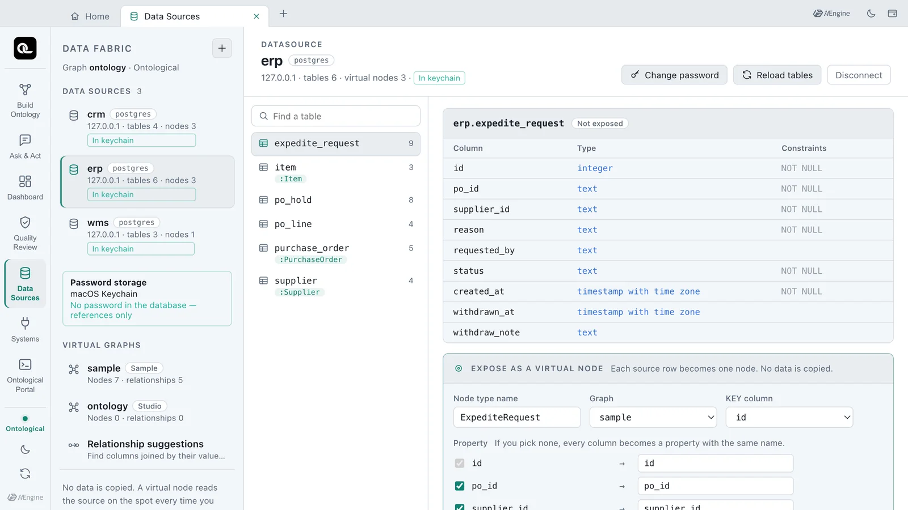
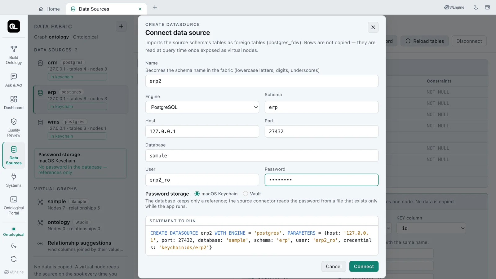
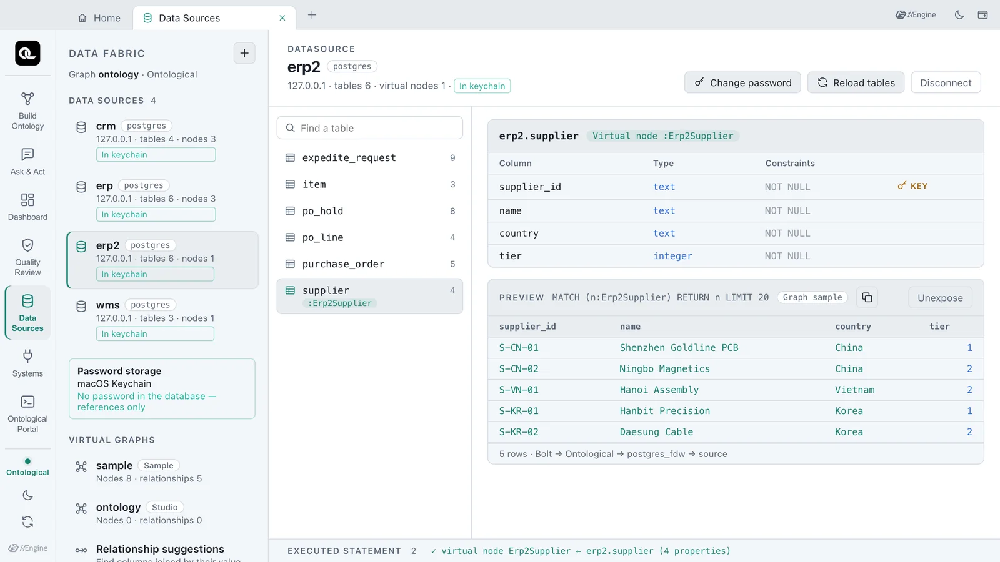
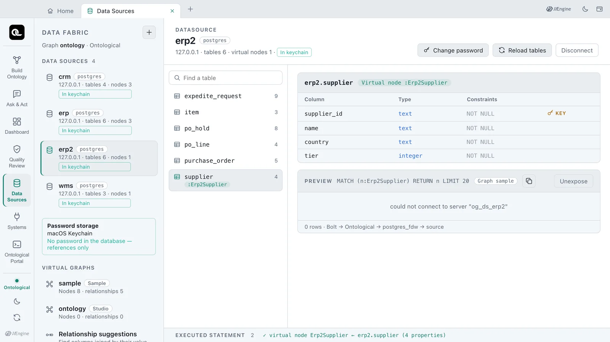
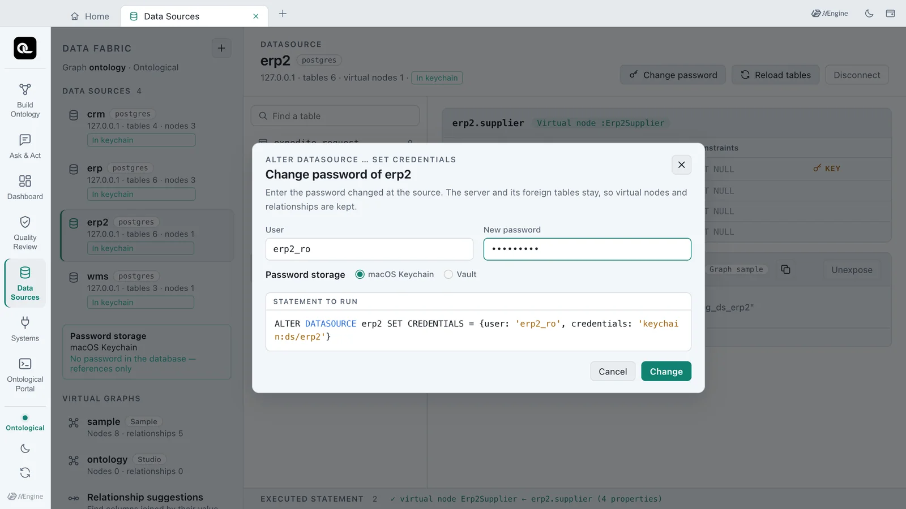
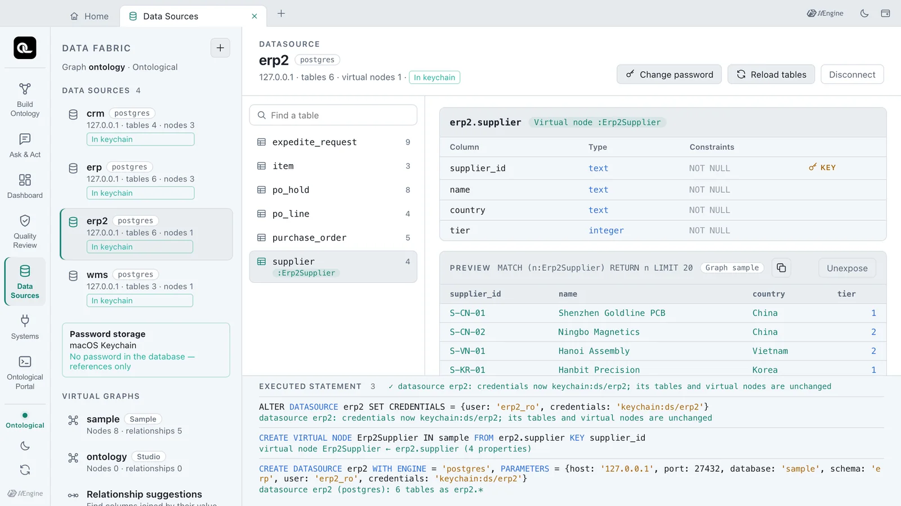
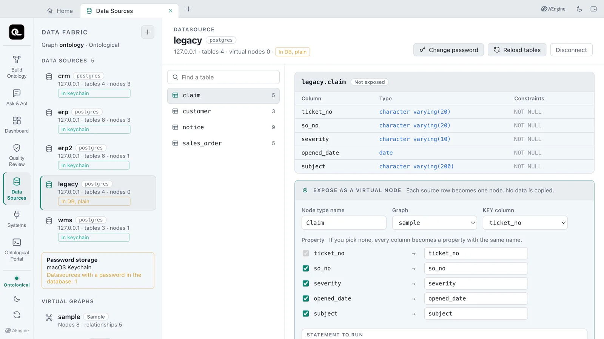
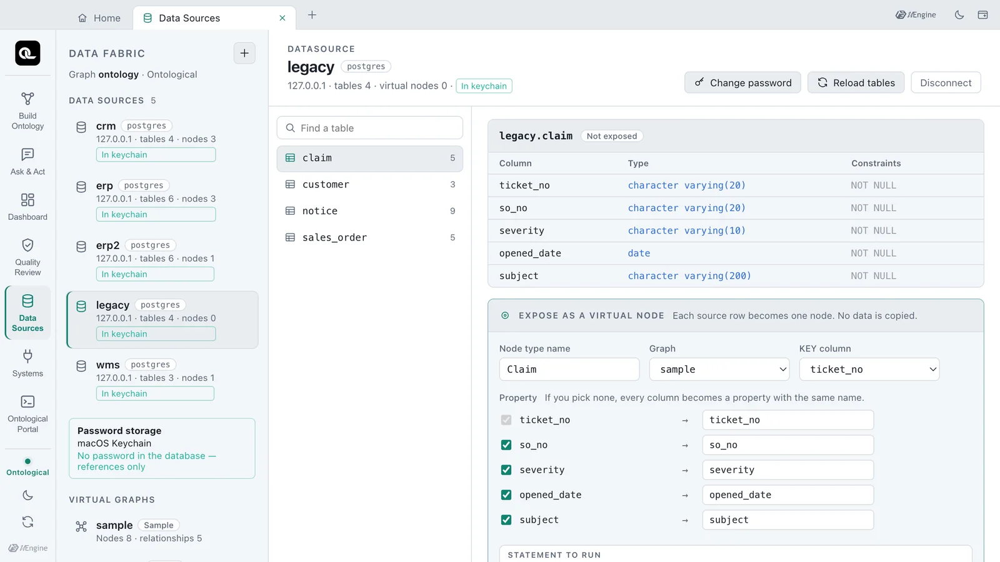

Learn how a datasource's password is kept in the OS keychain (or Vault) instead of the database. You read the storage badges, connect a new source with keychain storage, and change only the password when the source's password changes — without dropping any virtual node.
Where is the password?#
To connect to a source database you need an account and a password. If that password sits in the database itself (in a user mapping), anyone who can read the database's backups or logs can read the source password too.
A datasource in Ontological Studio holds a reference instead of the password. The password itself lives somewhere else.
| What | Where |
|---|---|
| Datasource definition (host, port, database, user) | Ontological DB |
A reference that points to the password, keychain:ds/erp |
Ontological DB — a label, not the password |
| The password | A store file in the app's data folder, encrypted with the OS keychain (macOS Keychain, Windows DPAPI). It can also live in your company's Vault or OpenBao |
| The file the source connector reads | Exists only while the app runs (readable by the owner only). It is deleted when the app quits |
When the app starts it takes the passwords out of the keychain or Vault and writes the connector files; when it quits it deletes them. A datasource whose reference cannot be read gets no file, so only that datasource fails with an error. The other datasources keep working.
For comparison, NVIDIA Auto Ontology keeps source connection details in plain text in its database unless Vault is turned on, and a connection whose Vault entry cannot be read silently disappears. In this app a reference is the default, and a reference that cannot be read shows up as an error.
Try it — reading the storage state#
- Open the Data Sources card on the home screen.
- Look at the badge on each datasource on the left. The sample
crm,erpandwmsall show In keychain. - Look at the Password storage box below the list. macOS Keychain and No password in the database — references only mean all is well.

| Badge | Meaning |
|---|---|
| In keychain | The database holds only the reference keychain:ds/<name>; the password is in the store file encrypted with the keychain |
| Vault | The database holds only the reference vault:<mount>/<path>#<field>; the password is in your company's Vault |
| In DB, plain | The password is in the database's user mapping as is. This is the old way; restarting the app moves it to the keychain (below) |
Try it — connecting a new source with keychain storage#
If you have a source to connect (a school practice database, as in the tip in Chapter 5), follow along. The pictures show a separate read-only account erp2_ro made in the app's own sample database, whose erp schema is connected under the name erp2.
- Click ＋ at the top left to open the connection form.
- Fill in the name, engine, schema, host, port, database, user and password.
- Under Password storage choose macOS Keychain (the default). Vault can be chosen only when Vault is set up.
- Check Statement to run. Instead of the password it contains
credentials: 'keychain:ds/erp2'. - Click Connect.

This is the statement that runs. What the screen shows is exactly what runs.
CREATE DATASOURCE erp2 WITH ENGINE = 'postgres', PARAMETERS = {host: '127.0.0.1', port: 27432,
database: 'sample', schema: 'erp', user: 'erp2_ro', credentials: 'keychain:ds/erp2'}
The connected erp2 gets an In keychain badge too. Once a table is exposed as a virtual node, the source is read as usual. The picture shows erp2.supplier exposed as Erp2Supplier (the next chapter shows how to expose a table).

Try it — when the source's password changes#
When the source's administrator changes the account's password, the next query after the old connections are closed fails to log in. The preview shows could not connect to server "og_ds_erp2".

You do not need to drop the datasource and make it again. Disconnect is refused while virtual nodes use the datasource (Chapter 5), so making it again would mean dropping the virtual nodes first. Change password keeps the server and the foreign tables and changes only the login.
- Select the datasource
erp2and click Change password at the top right. - Enter the password changed at the source in New password. Leave the user as it is.
- Check Statement to run and click Change.
- Click the
suppliertable again and look at the preview. The same 5 rows come back.

ALTER DATASOURCE erp2 SET CREDENTIALS = {user: 'erp2_ro', credentials: 'keychain:ds/erp2'}
Open Executed statement at the bottom of the screen to see the engine's reply: datasource erp2: credentials now keychain:ds/erp2; its tables and virtual nodes are unchanged. The reference keeps its name; only the password in the keychain is new.

Datasources made the old way — In DB, plain#
A datasource made before references existed keeps its password in the database's user mapping. Such a datasource gets a yellow In DB, plain badge, and the Password storage box warns Datasources with a password in the database: 1. The picture shows legacy, a datasource made the old way for this test.

When the app starts again it moves that password to the keychain and rewrites the user-mapping table so no old row is left. The badge changes to In keychain. The app's own secrets file (secrets.json) is moved to the keychain the same way, and the plain file is deleted.

After the move, change the source password once
The values from before the move may remain in the database's WAL or backups. For a source account whose password was stored in plain text, change the password once and enter the new one with Change password.
If your company uses Vault or OpenBao#
Put VAULT_ADDR and an AppRole (VAULT_ROLE_ID, VAULT_SECRET_ID) or a VAULT_TOKEN in studio.env, and Vault can be chosen in the connection form and in Change password. Enter <mount>/<path>#<field> (for example secret/ontological/erp#password) and the datasource holds vault:secret/ontological/erp#password as its reference.
- Values from Vault are not copied into the app's store file. They are read from Vault each time the app starts.
- A failed login or a missing path or field is reported as an error (for example, a Vault login failure).
- Vault itself is not shipped with the app. Use your company's Vault or OpenBao.
The statements behind the screen#
| Statement | What it does |
|---|---|
CREATE DATASOURCE … {…, credentials: '…'} |
Connects with a reference instead of the password |
ALTER DATASOURCE … SET CREDENTIALS |
Keeps the server and foreign tables, changes only the login |
SHOW DATASOURCES |
The credentials column shows the reference |
SHOW CREDENTIALS |
The connector files the app writes when it starts (no secrets) |
Check yourself
- When you connect a new datasource with macOS Keychain storage, what is left in the Ontological DB, and where is the password?
- The source's administrator changed the password of the
erp2account. Do you need to drop the virtual nodeErp2Supplierand make the datasource again? - What happens to the password files the source connectors read when the app quits? What happens to a datasource whose keychain item is lost?
Show answers
- Only the definition (host, user and so on) and the reference
keychain:ds/<name>. The password is in the store file in the app's data folder, encrypted with the OS keychain. It is not in the statement to run, the user mapping or the PostgreSQL log. - No. Change password (
ALTER DATASOURCE erp2 SET CREDENTIALS = …) changes only the password. The server and foreign tables stay, so the virtual nodes and relationships read again as they are. - The folder of connector files is deleted, and written again from the keychain at the next start. A datasource whose keychain item is lost gets no file, so only queries that read that datasource fail with an error. It does not silently disappear, and the other datasources keep working.